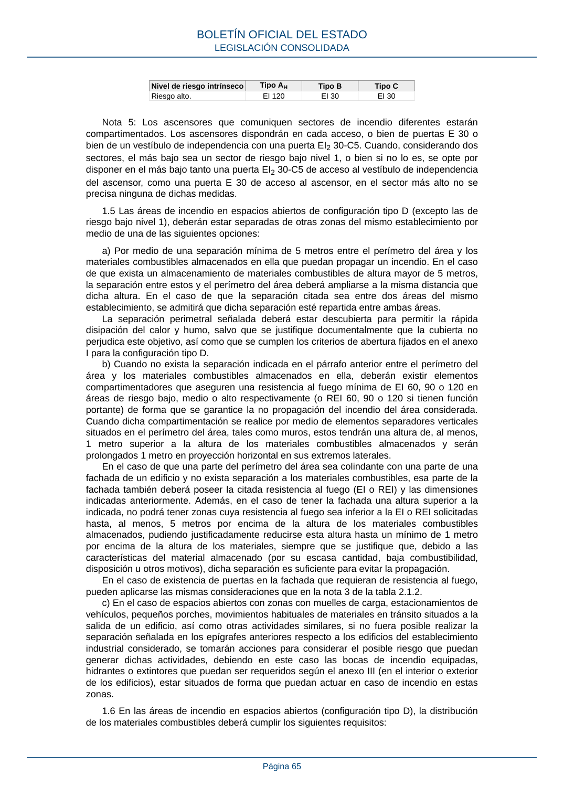

RSCIEI · Página 65 · versión 2025-04-10
SHA256: 85aa0af25d51e5b58d8975a4eefbf76d3f57a8933445cfe814ae9c4818a2e3e7 · página física 65 de 108 · métodos de encabezado
solo si están cotejados.
Formatos: Markdown · JSON de bloques · PDF p. 65 · imagen PNG
Nivel de riesgo intrínseco Tipo AH Tipo B Tipo C Riesgo alto. EI 120 EI 30 EI 30 Nota 5: Los ascensores que comuniquen sectores de incendio diferentes estarán compartimentados. Los ascensores dispondrán en cada acceso, o bien de puertas E 30 o bien de un vestíbulo de independencia con una puerta EI2 30-C5. Cuando, considerando dos sectores, el más bajo sea un sector de riesgo bajo nivel 1, o bien si no lo es, se opte por disponer en el más bajo tanto una puerta EI2 30-C5 de acceso al vestíbulo de independencia del ascensor, como una puerta E 30 de acceso al ascensor, en el sector más alto no se precisa ninguna de dichas medidas. 1.5 Las áreas de incendio en espacios abiertos de configuración tipo D (excepto las de riesgo bajo nivel 1), deberán estar separadas de otras zonas del mismo establecimiento por medio de una de las siguientes opciones: a) Por medio de una separación mínima de 5 metros entre el perímetro del área y los materiales combustibles almacenados en ella que puedan propagar un incendio. En el caso de que exista un almacenamiento de materiales combustibles de altura mayor de 5 metros, la separación entre estos y el perímetro del área deberá ampliarse a la misma distancia que dicha altura. En el caso de que la separación citada sea entre dos áreas del mismo establecimiento, se admitirá que dicha separación esté repartida entre ambas áreas. La separación perimetral señalada deberá estar descubierta para permitir la rápida disipación del calor y humo, salvo que se justifique documentalmente que la cubierta no perjudica este objetivo, así como que se cumplen los criterios de abertura fijados en el anexo I para la configuración tipo D. b) Cuando no exista la separación indicada en el párrafo anterior entre el perímetro del área y los materiales combustibles almacenados en ella, deberán existir elementos compartimentadores que aseguren una resistencia al fuego mínima de EI 60, 90 o 120 en áreas de riesgo bajo, medio o alto respectivamente (o REI 60, 90 o 120 si tienen función portante) de forma que se garantice la no propagación del incendio del área considerada. Cuando dicha compartimentación se realice por medio de elementos separadores verticales situados en el perímetro del área, tales como muros, estos tendrán una altura de, al menos, 1 metro superior a la altura de los materiales combustibles almacenados y serán prolongados 1 metro en proyección horizontal en sus extremos laterales. En el caso de que una parte del perímetro del área sea colindante con una parte de una fachada de un edificio y no exista separación a los materiales combustibles, esa parte de la fachada también deberá poseer la citada resistencia al fuego (EI o REI) y las dimensiones indicadas anteriormente. Además, en el caso de tener la fachada una altura superior a la indicada, no podrá tener zonas cuya resistencia al fuego sea inferior a la EI o REI solicitadas hasta, al menos, 5 metros por encima de la altura de los materiales combustibles almacenados, pudiendo justificadamente reducirse esta altura hasta un mínimo de 1 metro por encima de la altura de los materiales, siempre que se justifique que, debido a las características del material almacenado (por su escasa cantidad, baja combustibilidad, disposición u otros motivos), dicha separación es suficiente para evitar la propagación. En el caso de existencia de puertas en la fachada que requieran de resistencia al fuego, pueden aplicarse las mismas consideraciones que en la nota 3 de la tabla 2.1.2. c) En el caso de espacios abiertos con zonas con muelles de carga, estacionamientos de vehículos, pequeños porches, movimientos habituales de materiales en tránsito situados a la salida de un edificio, así como otras actividades similares, si no fuera posible realizar la separación señalada en los epígrafes anteriores respecto a los edificios del establecimiento industrial considerado, se tomarán acciones para considerar el posible riesgo que puedan generar dichas actividades, debiendo en este caso las bocas de incendio equipadas, hidrantes o extintores que puedan ser requeridos según el anexo III (en el interior o exterior de los edificios), estar situados de forma que puedan actuar en caso de incendio en estas zonas. 1.6 En las áreas de incendio en espacios abiertos (configuración tipo D), la distribución de los materiales combustibles deberá cumplir los siguientes requisitos: BOLETÍN OFICIAL DEL ESTADO LEGISLACIÓN CONSOLIDADA Página 65
